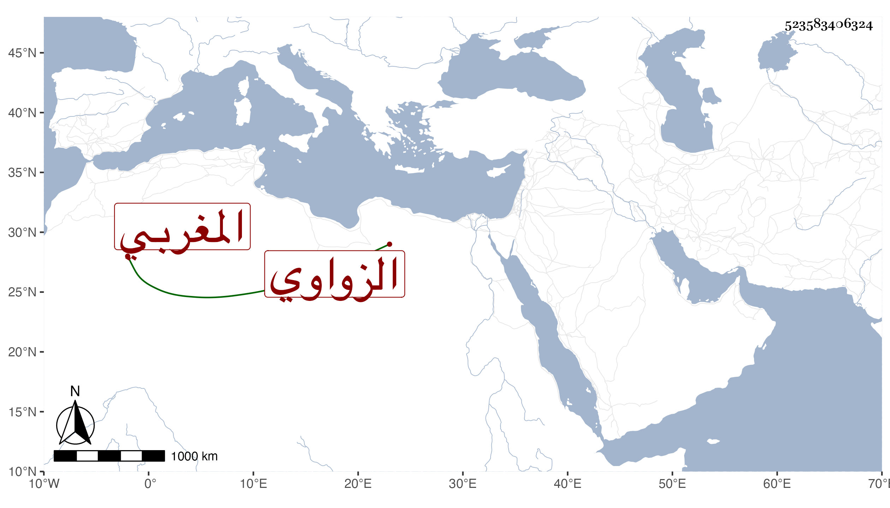

0902Sakhawi.DawLamic.ITO20230111-ara1.EIS1600.523583406324
Biography ID: 523583406324
522
عيسى الزواوي المغربي نزيل الأزهر . مات في شوال سنة ثمان وسبعين وأظنه جاز السبعين ، وكان قد تهيأ للحج ونزل عن أكثر جهاته بحيث اجتمع له منها نحو مائة وخمسين دينارا فاختلست منه إلا اليسير وتألم بحيث قيل أنه سبب ضعفه المستمر حتى مات ويقال أنه وقف كتبه وكان صالحا صوفيا بسعيد السعداء ممن حج غير مرة وجاور وربما قرأ عليه بعض المبتدئين في الفرائض والحساب رحمه الله .
